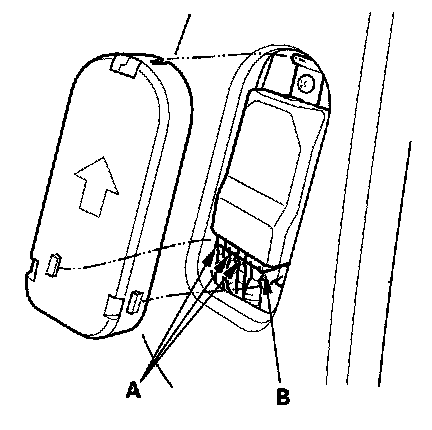

DTC 86-2x
DTC 86-1x ("x" can be 0 thru 9 or A thru F): Faulty OPDS Seat-Back SensorDTC 86-2x ("x" can be 0 thru 9 or A thru F): Faulty OPDS Seat Support Sensor
NOTE: Before doing this troubleshooting procedure, review SRS Precautions and Procedures.
1. Erase the DTC memory.
2. Turn the ignition switch ON (II), and check that the SRS indicator comes on for about 6 seconds and then goes off.
Does the SRS indicator stay on, and is DTC 86-1x or 86-2x indicated?
YES - Go to step 3.
NO - Intermittent failure, the system is OK at this time. Go to Troubleshooting Intermittent Failures. If another DTC is indicated, go to the DTC Troubleshooting Index.
NOTE: Aftermarket devices (fluorescent lights, laptop computers, etc.) used near the front passenger's seat-back can interfere with the seat-back sensors and cause a false DTC 86-1x or 86-2x. If one of these devices was used, erase the DTC, operate the device near the seat-back, and recheck for DTCs. If DTC 86-1x or 86-2x is set, erase it, and do not use the device near the seat-back.

3. Check the connection at the OPDS sensor harness connector (A) and the ODS unit connector (B).
Is the connection OK?
YES - Go to step 4.
NO - Repair the poor connection, and clear the DTC.
4. Replace the OPDS sensor/seat-back foam, and initialize the ODS.
5. Erase the DTC memory, then check for DTC 86-1x or 86-2x.
Is DTC 86-1x or 86-2x indicated?
YES - Replace the ODS unit.
NO - The system is OK.